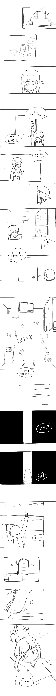
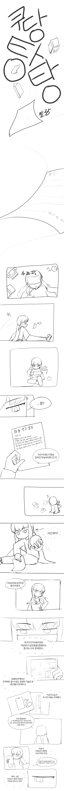
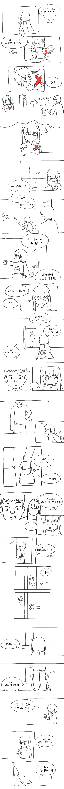
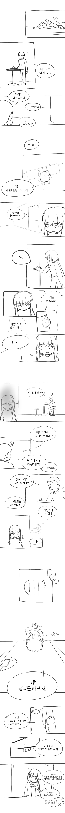
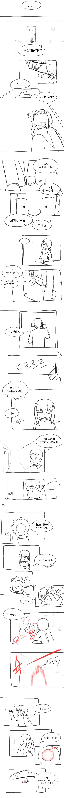
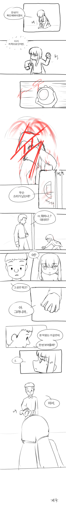

— · 4 · 2026-11-13 09:20:03 · 원문






수집 당시 댓글 4개
상당군 · 11.12 15:17:37
가면군 · 11.12 16:39:54
ㅇㅇ · 11.12 18:11:13
ㅇㅇ · 11.13 19:26:03
댓글
수집 당시 댓글 4개
상당군 · 11.12 15:17:37
가면군 · 11.12 16:39:54
ㅇㅇ · 11.12 18:11:13
ㅇㅇ · 11.13 19:26:03